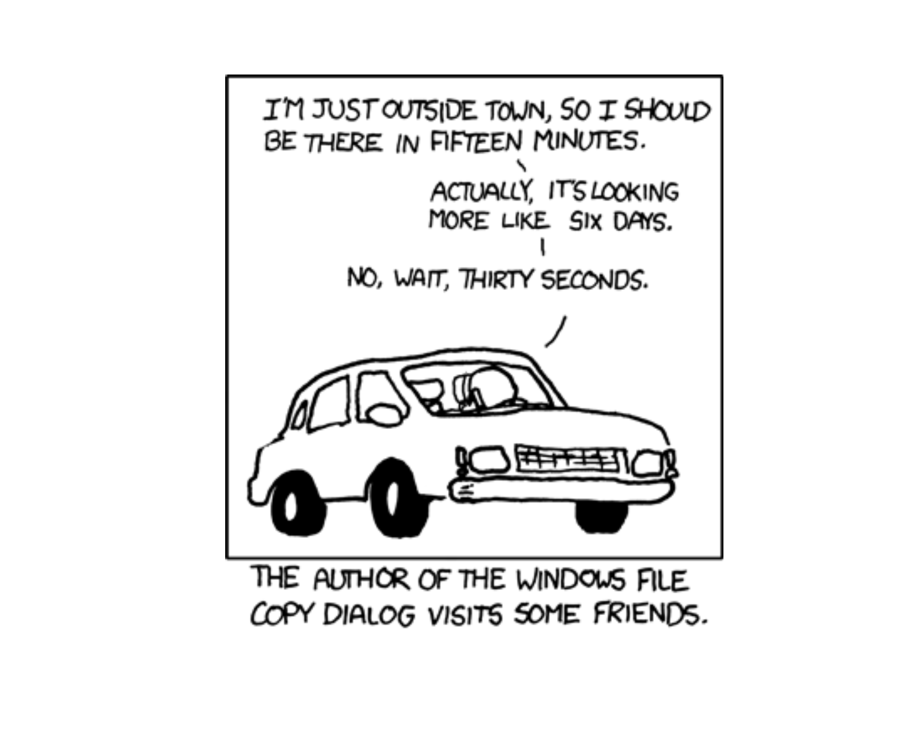
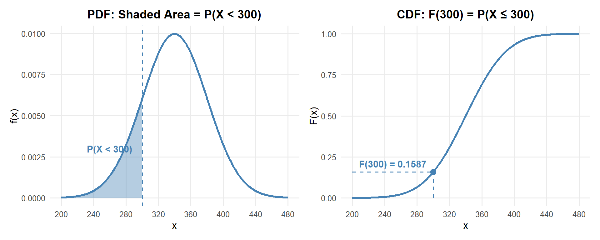
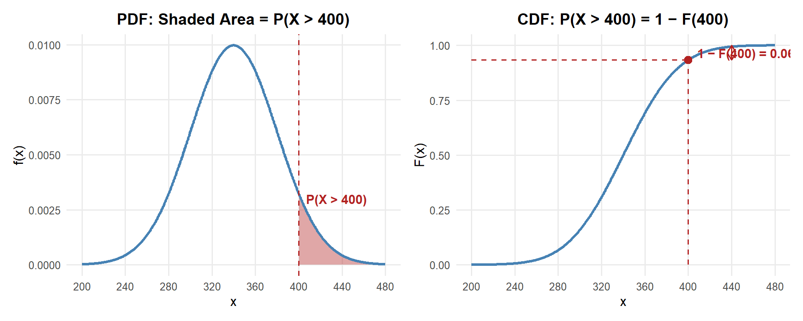
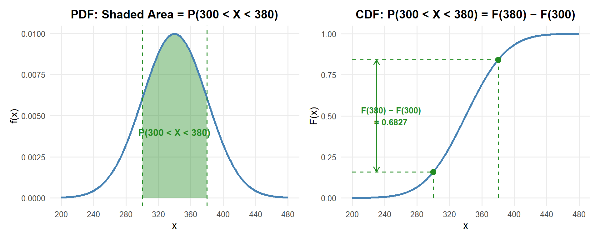
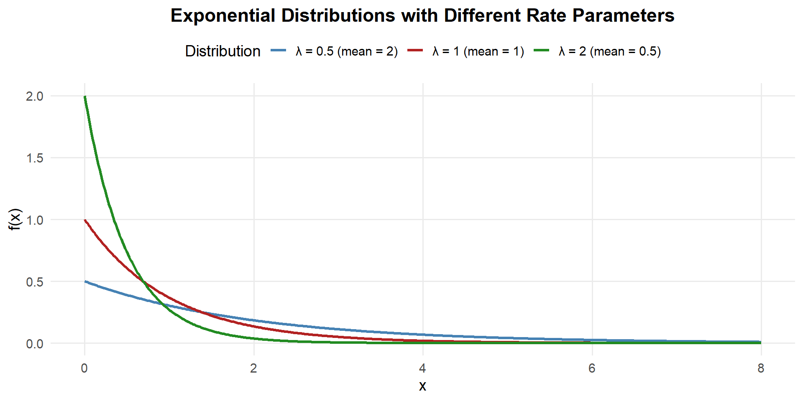
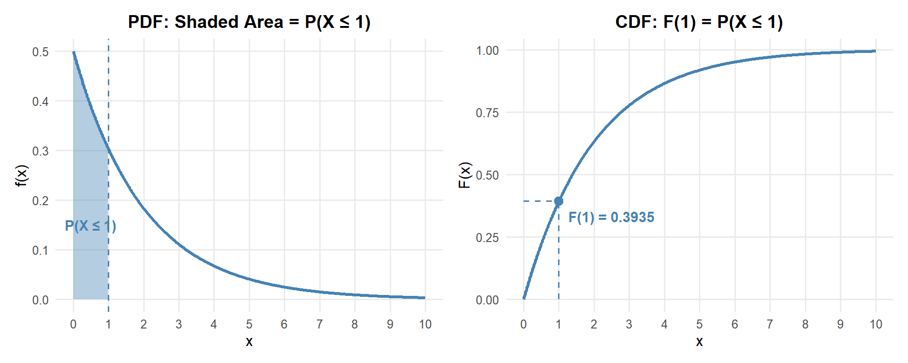
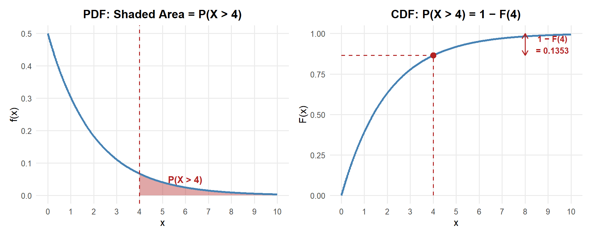
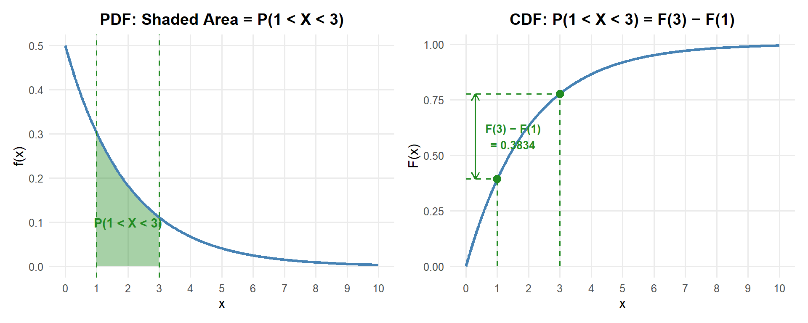
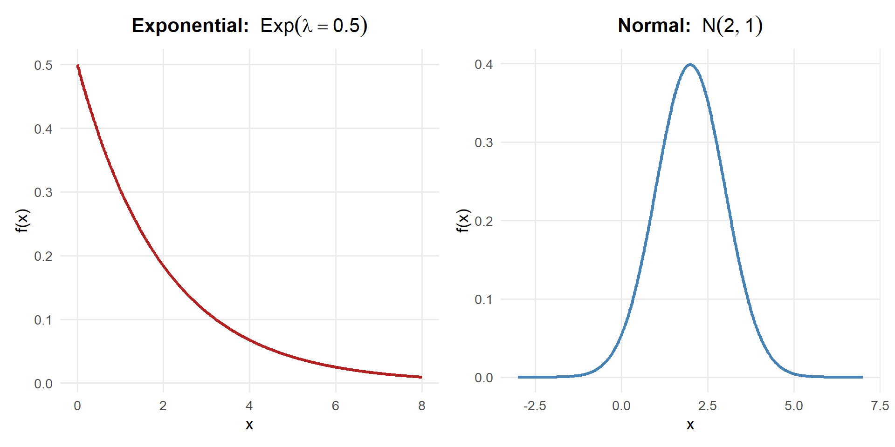

Lesson 14: Exponential Distribution
The exponential distribution models waiting times — how long until the next event happens.

WarningWPR I Note
Some of the normal distribution material from Lesson 13 will be testable on WPR I — but not everything due to the power outage class cancellation. We’ll review the key normal distribution concepts you need to know at the start of today’s lesson before moving on to the exponential distribution.
What We Did: Lessons 6–13
NoteReview: Lessons 6–13
NoteLesson 6: Probability Basics
Sample Spaces and Events:
- Sample space \(S\) = set of all possible outcomes
- Event = subset of the sample space
- Operations: Union (\(A \cup B\)), Intersection (\(A \cap B\)), Complement (\(A^c\))
Kolmogorov Axioms:
- \(P(A) \geq 0\)
- \(P(S) = 1\)
- For mutually exclusive events: \(P(A \cup B) = P(A) + P(B)\)
Key Rules:
- Complement Rule: \(P(A^c) = 1 - P(A)\)
- Addition Rule: \(P(A \cup B) = P(A) + P(B) - P(A \cap B)\)
NoteLesson 7: Conditional Probability
Conditional Probability: \[P(A \mid B) = \frac{P(A \cap B)}{P(B)}\]
Multiplication Rule: \[P(A \cap B) = P(A) \cdot P(B \mid A) = P(B) \cdot P(A \mid B)\]
Law of Total Probability: \[P(A) = P(B) \cdot P(A \mid B) + P(B^c) \cdot P(A \mid B^c)\]
Bayes’ Theorem: \[P(B \mid A) = \frac{P(B) \cdot P(A \mid B)}{P(B) \cdot P(A \mid B) + P(B^c) \cdot P(A \mid B^c)}\]
NoteLesson 8: Counting & Independence
Counting Formulas:
| With Replacement | Without Replacement | |
|---|---|---|
| Ordered | \(n^k\) | \(P(n,k) = \frac{n!}{(n-k)!}\) |
| Unordered | \(\binom{n+k-1}{k}\) | \(\binom{n}{k} = \frac{n!}{k!(n-k)!}\) |
Independence:
- \(A\) and \(B\) are independent if \(P(A \cap B) = P(A) \cdot P(B)\)
- Equivalently: \(P(A \mid B) = P(A)\)
- Independent \(\neq\) Mutually Exclusive!
NoteLesson 9: Discrete Random Variables
Random Variables:
- A random variable \(X\) assigns a numerical value to each outcome in a sample space
- Discrete RVs take finite or countably infinite values
PMF: \(p(x) = P(X = x)\) with \(p(x) \geq 0\) and \(\sum p(x) = 1\)
CDF: \(F(x) = P(X \leq x) = \sum_{y \leq x} p(y)\)
Expected Value: \(E(X) = \sum x \cdot p(x)\)
Variance: \(Var(X) = \sum (x - \mu)^2 \cdot p(x) = E(X^2) - [E(X)]^2\)
NoteLesson 10: Binomial Distribution
BINS Conditions:
- Binary outcomes (success/failure)
- Independent trials
- Number of trials is fixed (\(n\))
- Same probability (\(p\)) each trial
Key Formulas: If \(X \sim \text{Binomial}(n, p)\):
- PMF: \(P(X = x) = \binom{n}{x} p^x (1-p)^{n-x}\)
- Mean: \(E(X) = np\)
- Variance: \(Var(X) = np(1-p)\)
R Functions: dbinom(x, size, prob) for PMF, pbinom(x, size, prob) for CDF
NoteLesson 11: Poisson Distribution
When to Use Poisson:
- Counting events in a fixed interval (time, area, volume)
- Events occur independently at a constant average rate \(\lambda\)
Key Formulas: If \(X \sim \text{Poisson}(\lambda)\):
- PMF: \(P(X = x) = \frac{e^{-\lambda} \lambda^x}{x!}, \quad x = 0, 1, 2, \ldots\)
- Mean: \(E(X) = \lambda\)
- Variance: \(Var(X) = \lambda\)
R Functions: dpois(x, lambda) for PMF, ppois(x, lambda) for CDF
NoteLesson 12: Continuous Random Variables
Continuous vs. Discrete:
- Discrete RVs: probabilities come from a PMF — \(P(X = x)\)
- Continuous RVs: probabilities come from areas under a PDF — \(P(a \leq X \leq b) = \int_a^b f(x)\,dx\)
Probability Density Function (PDF): \(f(x)\) where:
- \(f(x) \geq 0\) for all \(x\)
- \(\int_{-\infty}^{\infty} f(x)\,dx = 1\)
- \(P(a \leq X \leq b) = \int_a^b f(x)\,dx\)
CDF: \(F(x) = P(X \leq x) = \int_{-\infty}^{x} f(t)\,dt\)
Key Facts:
- \(P(X = c) = 0\) for any single value \(c\)
- \(E(X) = \int x \cdot f(x)\,dx\)
- \(Var(X) = E(X^2) - [E(X)]^2\)
NoteLesson 13: Normal Distribution
The Normal Distribution: If \(X \sim N(\mu, \sigma^2)\):
- Bell-shaped, symmetric about \(\mu\)
- \(E(X) = \mu\), \(Var(X) = \sigma^2\), \(SD(X) = \sigma\)
Standardization: \(Z = \frac{X - \mu}{\sigma} \sim N(0, 1)\)
Unstandardization: \(X = \mu + Z\sigma\)
R Functions:
pnorm(x, mean, sd)— CDF: \(P(X \leq x)\)qnorm(p, mean, sd)— Quantile: find \(x\) such that \(P(X \leq x) = p\)
Empirical Rule (68-95-99.7):
- 68% within \(\mu \pm \sigma\)
- 95% within \(\mu \pm 2\sigma\)
- 99.7% within \(\mu \pm 3\sigma\)
What We’re Doing: Lesson 14
Objectives
- Recognize the memoryless property
- Understand the rate-mean relationship
- Compute exponential probabilities and quantiles
Required Reading
Devore, Section 4.4
WPR I Reminder
WPR I is Lesson 16 and covers all concepts from Lessons 6–14 (including today!).
Study Materials (also available on Canvas)
No R on WPR I
There will be no R / no technology on WPR I. This means you need to know how to set up problems up to the point where you’d need technology to finish.
Break!
Reese
Cal
Army


The Takeaway for Today
NoteKey Concepts: Exponential Distribution
The Exponential Distribution: If \(X \sim \text{Exp}(\lambda)\):
- Models the time between events in a Poisson process
- \(\lambda\) = rate (events per unit time), \(\mu = \frac{1}{\lambda}\) = mean (average time between events)
- PDF: \(f(x) = \lambda e^{-\lambda x}, \quad x \geq 0\)
- CDF: \(F(x) = 1 - e^{-\lambda x}\)
Key Formulas:
- Mean: \(E(X) = \frac{1}{\lambda}\)
- Variance: \(Var(X) = \frac{1}{\lambda^2}\)
- SD: \(SD(X) = \frac{1}{\lambda}\)
Memoryless Property: \[P(X > s + t \mid X > s) = P(X > t)\]
The probability of waiting at least \(t\) more units doesn’t depend on how long you’ve already waited.
R Functions:
pexp(x, rate)— CDF: \(P(X \leq x)\)qexp(p, rate)— Quantile: find \(x\) such that \(P(X \leq x) = p\)dexp(x, rate)— PDF: \(f(x)\) (density, not probability)
Quick Normal Review (from Lesson 13)
The normal distribution is the most important continuous distribution you’ll encounter. Let’s review the essentials that are testable on WPR I.
The Normal PDF
ImportantNormal Distribution
A continuous random variable \(X\) has a normal distribution with parameters \(\mu\) and \(\sigma\) (where \(\sigma > 0\)) if the PDF is:
\[f(x) = \frac{1}{\sigma\sqrt{2\pi}} e^{-\frac{(x-\mu)^2}{2\sigma^2}}, \quad -\infty < x < \infty\]
We write \(X \sim N(\mu, \sigma^2)\).
- \(\mu\) = mean (center of the bell curve)
- \(\sigma\) = standard deviation (controls the spread)
- \(\sigma^2\) = variance

- Changing \(\mu\) shifts the curve left or right
- Changing \(\sigma\) stretches or compresses the curve
- Always symmetric about \(\mu\), total area = 1
Expected Value and Variance
ImportantMean, Variance, and SD of the Normal
If \(X \sim N(\mu, \sigma^2)\):
\[E(X) = \mu \qquad Var(X) = \sigma^2 \qquad SD(X) = \sigma\]
The parameters \(\mu\) and \(\sigma\) directly are the mean and standard deviation — that’s why we name them that way!
NoteDerivation: E(X) = μ (just FYI — not required)
Starting from the definition of expected value for a continuous RV:
\[E(X) = \int_{-\infty}^{\infty} x \cdot \frac{1}{\sigma\sqrt{2\pi}} e^{-\frac{(x-\mu)^2}{2\sigma^2}}\,dx\]
Substitute \(u = \frac{x - \mu}{\sigma}\), so \(x = \mu + \sigma u\) and \(dx = \sigma\,du\):
\[E(X) = \int_{-\infty}^{\infty} (\mu + \sigma u) \cdot \frac{1}{\sigma\sqrt{2\pi}} e^{-u^2/2} \cdot \sigma\,du\]
\[= \int_{-\infty}^{\infty} (\mu + \sigma u) \cdot \frac{1}{\sqrt{2\pi}} e^{-u^2/2}\,du\]
Split into two integrals:
\[= \mu \underbrace{\int_{-\infty}^{\infty} \frac{1}{\sqrt{2\pi}} e^{-u^2/2}\,du}_{= 1 \text{ (total area under std normal)}} + \sigma \underbrace{\int_{-\infty}^{\infty} u \cdot \frac{1}{\sqrt{2\pi}} e^{-u^2/2}\,du}_{= 0 \text{ (odd function, symmetric limits)}}\]
\[\boxed{E(X) = \mu}\]
NoteDerivation: Var(X) = σ² (just FYI — not required)
Using \(Var(X) = E(X^2) - [E(X)]^2\), we need \(E(X^2)\).
With the same substitution \(u = \frac{x - \mu}{\sigma}\):
\[E(X^2) = \int_{-\infty}^{\infty} (\mu + \sigma u)^2 \cdot \frac{1}{\sqrt{2\pi}} e^{-u^2/2}\,du\]
\[= \int_{-\infty}^{\infty} (\mu^2 + 2\mu\sigma u + \sigma^2 u^2) \cdot \frac{1}{\sqrt{2\pi}} e^{-u^2/2}\,du\]
Split into three integrals:
\[= \mu^2 \underbrace{\int \frac{1}{\sqrt{2\pi}} e^{-u^2/2}\,du}_{=1} + 2\mu\sigma \underbrace{\int u \cdot \frac{1}{\sqrt{2\pi}} e^{-u^2/2}\,du}_{=0} + \sigma^2 \underbrace{\int u^2 \cdot \frac{1}{\sqrt{2\pi}} e^{-u^2/2}\,du}_{=1 \text{ (integration by parts)}}\]
The last integral equals 1 (this is \(E(Z^2)\) where \(Z \sim N(0,1)\), and since \(E(Z) = 0\), we have \(E(Z^2) = Var(Z) + [E(Z)]^2 = 1 + 0 = 1\)).
\[E(X^2) = \mu^2 + \sigma^2\]
Therefore:
\[Var(X) = E(X^2) - [E(X)]^2 = (\mu^2 + \sigma^2) - \mu^2\]
\[\boxed{Var(X) = \sigma^2}\]
Computing Normal Probabilities
Since the normal CDF has no closed form, we use pnorm() in R (or the Z table on WPR I). Here’s the pattern for every type of probability question:
Suppose \(X \sim N(340, 40^2)\) (cadet deadlift weights from Lesson 13).
\(P(X < a)\) — Less Than:
Recall the PDF: \(f(x) = \frac{1}{\sigma\sqrt{2\pi}} e^{-\frac{(x-\mu)^2}{2\sigma^2}}\) with \(\mu = 340, \sigma = 40\)
\[P(X < 300) = \int_{-\infty}^{300} f(x)\,dx = 0.1587\]
pnorm(300, mean = 340, sd = 40)[1] 0.1586553
\(P(X > a)\) — Greater Than (subtract from 1):
Recall the PDF: \(f(x) = \frac{1}{\sigma\sqrt{2\pi}} e^{-\frac{(x-\mu)^2}{2\sigma^2}}\) with \(\mu = 340, \sigma = 40\)
\[P(X > 400) = \int_{400}^{\infty} f(x)\,dx = 1 - F(400) = 0.0668\]
1 - pnorm(400, mean = 340, sd = 40)[1] 0.0668072
\(P(a < X < b)\) — Between (subtract two CDFs):
Recall the PDF: \(f(x) = \frac{1}{\sigma\sqrt{2\pi}} e^{-\frac{(x-\mu)^2}{2\sigma^2}}\) with \(\mu = 340, \sigma = 40\)
\[P(300 < X < 380) = \int_{300}^{380} f(x)\,dx = F(380) - F(300) = 0.6827\]
pnorm(380, mean = 340, sd = 40) - pnorm(300, mean = 340, sd = 40)[1] 0.6826895
\(P(X = a)\) — Equal To (always zero for continuous RVs):
Recall the PDF: \(f(x) = \frac{1}{\sigma\sqrt{2\pi}} e^{-\frac{(x-\mu)^2}{2\sigma^2}}\) with \(\mu = 340, \sigma = 40\)
\[P(X = 350) = \int_{350}^{350} f(x)\,dx = 0\]
For continuous distributions, the probability at any single point is always zero — probability comes from area, and a single point has no width.
The Exponential Distribution
Connection to Poisson
Remember the Poisson distribution from Lesson 11? It counts the number of events in a fixed interval. The exponential distribution is the other side of the same coin — it models the time between events.
ImportantPoisson ↔︎ Exponential Connection
If events occur at a constant average rate \(\lambda\) per unit time (Poisson process), then:
- The number of events in a time interval of length \(t\) follows \(\text{Poisson}(\lambda)\)
- The time between consecutive events follows \(\text{Exp}(\lambda)\)
🐇 (TAME Thing)
Same \(\lambda\), two perspectives!
The PDF and CDF
ImportantExponential Distribution
A continuous random variable \(X\) has an exponential distribution with rate parameter \(\lambda > 0\) if the PDF is:
\[f(x) = \lambda e^{-\lambda x}, \quad x \geq 0\]
The CDF is the integral of the PDF:
\[F(x) = P(X \leq x) = \int_0^x \lambda e^{-\lambda t}\,dt\]
\[= 1 - e^{-\lambda x}, \quad x \geq 0\]
We write \(X \sim \text{Exp}(\lambda)\).
Unlike the normal, this CDF has a closed form — we can compute exponential probabilities by hand!

Key observations:
- The exponential PDF is always right-skewed — most values are small, with a long right tail
- Larger \(\lambda\) = faster rate = shorter wait times = steeper decay
- Smaller \(\lambda\) = slower rate = longer wait times = gentler decay
- Unlike the normal, the exponential is not symmetric
Mean, Variance, and Standard Deviation
ImportantMean, Variance, and SD of the Exponential
If \(X \sim \text{Exp}(\lambda)\):
\[E(X) = \mu = \frac{1}{\lambda}\]
\[Var(X) = \sigma^2 = \frac{1}{\lambda^2}\]
\[SD(X) = \sigma = \frac{1}{\lambda}\]
Notice: the mean equals the standard deviation (\(\mu = \sigma\)) for the exponential distribution! This is a unique property.
NoteDerivation: E(X) = 1/λ (just FYI — not required)
\[E(X) = \int_0^{\infty} x \cdot \lambda e^{-\lambda x}\,dx\]
Using integration by parts with \(u = x\) and \(dv = \lambda e^{-\lambda x}\,dx\):
\[= \left[-x e^{-\lambda x}\right]_0^{\infty} + \int_0^{\infty} e^{-\lambda x}\,dx\]
The first term is 0 (at both limits). The remaining integral:
\[= \left[-\frac{1}{\lambda} e^{-\lambda x}\right]_0^{\infty} = 0 - \left(-\frac{1}{\lambda}\right)\]
\[\boxed{E(X) = \frac{1}{\lambda}}\]
NoteDerivation: Var(X) = 1/λ² (just FYI — not required)
Using \(Var(X) = E(X^2) - [E(X)]^2\), we need \(E(X^2)\):
\[E(X^2) = \int_0^{\infty} x^2 \cdot \lambda e^{-\lambda x}\,dx\]
Using integration by parts twice (or the gamma function identity \(\int_0^{\infty} x^n \lambda e^{-\lambda x}\,dx = \frac{n!}{\lambda^n}\)):
\[E(X^2) = \frac{2}{\lambda^2}\]
Therefore:
\[Var(X) = E(X^2) - [E(X)]^2 = \frac{2}{\lambda^2} - \left(\frac{1}{\lambda}\right)^2 = \frac{2}{\lambda^2} - \frac{1}{\lambda^2}\]
\[\boxed{Var(X) = \frac{1}{\lambda^2}}\]
The Rate-Mean Relationship
The relationship between \(\lambda\) and the mean is an inverse:
| Rate \(\lambda\) | Mean \(1/\lambda\) | Interpretation |
|---|---|---|
| 2 per hour | 0.5 hours | Events happen frequently → short waits |
| 1 per hour | 1 hour | Events happen once per hour on average |
| 0.5 per hour | 2 hours | Events happen rarely → long waits |
TipQuick Conversion
- Rate to Mean: divide 1 by the rate → \(\mu = 1/\lambda\)
- Mean to Rate: divide 1 by the mean → \(\lambda = 1/\mu\)
If a convoy passes every 20 minutes on average, the rate is \(\lambda = 1/20 = 0.05\) per minute (or equivalently \(\lambda = 3\) per hour).
Computing Exponential Probabilities
R Functions for the Exponential Distribution
ImportantR Functions
pexp(x, rate)— CDF: \(P(X \leq x) = 1 - e^{-\lambda x}\)qexp(p, rate)— Quantile: find \(x\) such that \(P(X \leq x) = p\)dexp(x, rate)— PDF: \(f(x)\)
\(P(X \leq a)\) — Less Than
What is the probability the next report arrives within 1 hour?
Recall the PDF: \(f(x) = \lambda e^{-\lambda x}\) and CDF: \(F(x) = 1 - e^{-\lambda x}\) with \(\lambda = 0.5\)
\[P(X \leq 1) = \int_0^{1} \lambda e^{-\lambda x}\,dx = F(1) = 1 - e^{-\lambda \cdot 1} = 1 - e^{-0.5} = 0.3935\]
# By hand
1 - exp(-0.5 * 1)[1] 0.3934693# With pexp
pexp(1, rate = 0.5)[1] 0.3934693
About 39.3% chance the next report arrives within 1 hour.
\(P(X > a)\) — Greater Than
What is the probability we wait more than 4 hours for the next report?
Recall the PDF: \(f(x) = \lambda e^{-\lambda x}\) and CDF: \(F(x) = 1 - e^{-\lambda x}\) with \(\lambda = 0.5\)
\[P(X > 4) = \int_4^{\infty} \lambda e^{-\lambda x}\,dx = 1 - F(4) = e^{-\lambda \cdot 4} = e^{-2} = 0.1353\]
# By hand
exp(-0.5 * 4)[1] 0.1353353# With pexp
1 - pexp(4, rate = 0.5)[1] 0.1353353
About 13.5% chance we wait more than 4 hours.
\(P(a < X < b)\) — Between Two Values
What is the probability the next report arrives between 1 and 3 hours?
Recall the PDF: \(f(x) = \lambda e^{-\lambda x}\) and CDF: \(F(x) = 1 - e^{-\lambda x}\) with \(\lambda = 0.5\)
\[P(1 < X < 3) = \int_1^{3} \lambda e^{-\lambda x}\,dx = F(3) - F(1) = (1 - e^{-1.5}) - (1 - e^{-0.5}) = e^{-0.5} - e^{-1.5} = 0.3834\]
# By hand
exp(-0.5 * 1) - exp(-0.5 * 3)[1] 0.3834005# With pexp
pexp(3, rate = 0.5) - pexp(1, rate = 0.5)[1] 0.3834005
About 38.3% chance the next report arrives between 1 and 3 hours.
The Memoryless Property
ImportantThe Memoryless Property
If \(X \sim \text{Exp}(\lambda)\), then for any \(s, t > 0\):
\[P(X > s + t \mid X > s) = P(X > t)\]
In words: It doesn’t matter how long you’ve already waited — the probability of waiting at least \(t\) more units is always the same.
NoteProof (just FYI — not required)
\[P(X > s + t \mid X > s) = \frac{P(X > s + t)}{P(X > s)} = \frac{e^{-\lambda(s+t)}}{e^{-\lambda s}} = e^{-\lambda t} = P(X > t) \quad \checkmark\]
Example: You’re waiting for a supply convoy that arrives at rate \(\lambda = 0.5\) per hour. You’ve already been waiting 3 hours. What’s the probability you wait at least 1 more hour?
\[P(X > 4 \mid X > 3) = P(X > 1) = e^{-0.5} = 0.607\]
That’s the same as if you’d just started waiting. Your 3 hours of waiting give you no advantage.
Exponential vs. Normal: Side by Side

| Property | Exponential | Normal |
|---|---|---|
| Shape | Right-skewed, starts at max | Symmetric bell curve |
| Support | \(x \geq 0\) only | All real numbers \((-\infty, \infty)\) |
| Parameters | \(\lambda\) (rate) | \(\mu\) (mean), \(\sigma\) (SD) |
| Mean | \(1/\lambda\) | \(\mu\) |
| SD | \(1/\lambda\) | \(\sigma\) |
| Mean = SD? | Always! | Only if \(\mu = \sigma\) |
| Closed-form CDF? | Yes: \(1 - e^{-\lambda x}\) | No (need pnorm or Z table) |
| Memoryless? | Yes | No |
All Distributions So Far
NoteComplete Distribution Reference
| Binomial | Poisson | Normal | Exponential | |
|---|---|---|---|---|
| Type | Discrete | Discrete | Continuous | Continuous |
| Notation | \(X \sim \text{Bin}(n, p)\) | \(X \sim \text{Pois}(\lambda)\) | \(X \sim N(\mu, \sigma^2)\) | \(X \sim \text{Exp}(\lambda)\) |
| Parameters | \(n, p\) | \(\lambda\) | \(\mu, \sigma\) | \(\lambda\) |
| Models | # successes in \(n\) trials | # events in fixed interval | Symmetric measurements | Time between events |
| Mean | \(np\) | \(\lambda\) | \(\mu\) | \(1/\lambda\) |
| Variance | \(np(1-p)\) | \(\lambda\) | \(\sigma^2\) | \(1/\lambda^2\) |
| SD | \(\sqrt{np(1-p)}\) | \(\sqrt{\lambda}\) | \(\sigma\) | \(1/\lambda\) |
| R PMF/PDF | dbinom |
dpois |
dnorm |
dexp |
| R CDF | pbinom |
ppois |
pnorm |
pexp |
| R Quantile | qbinom |
qpois |
qnorm |
qexp |
| Connection | — | Binomial approx. | — | Poisson (time side) |
Class Problem: Waiting at the Aid Station
Patients arrive at a battalion aid station at a rate of 3 per hour.
NoteQuestions
Let \(Y\) = the number of patients arriving in an hour. What distribution does \(Y\) follow? What are the mean and variance of \(Y\)? The standard deviation?
What is the probability that more than 5 patients arrive in a given hour?
Let \(X\) = the waiting time (in hours) until the next patient arrives. What distribution does \(X\) follow?
What is the expected waiting time until the next patient? What is the variance? The standard deviation?
What is the probability you wait more than half an hour for the next patient?
TipAnswers
\(Y \sim \text{Poisson}(\lambda = 3)\). Mean: \(E(Y) = \lambda = 3\). Variance: \(Var(Y) = \lambda = 3\). SD: \(SD(Y) = \sqrt{3} \approx 1.732\).
\(P(Y > 5) = 1 - P(Y \leq 5)\)
1 - ppois(5, lambda = 3)[1] 0.08391794About 8.4% chance of more than 5 patients in an hour.
Same \(\lambda\)! Since patients arrive at rate \(\lambda = 3\) per hour, the time between patients follows \(X \sim \text{Exp}(\lambda = 3)\).
\(E(X) = \frac{1}{\lambda} = \frac{1}{3}\) hour (20 minutes). \(\quad Var(X) = \frac{1}{\lambda^2} = \frac{1}{9}\) hours\(^2\). \(\quad SD(X) = \frac{1}{\lambda} = \frac{1}{3}\) hour.
Half an hour = 0.5 hours. Recall the CDF: \(F(x) = 1 - e^{-\lambda x}\) with \(\lambda = 3\)
\[P(X > 0.5) = 1 - F(0.5) = e^{-\lambda \cdot 0.5} = e^{-3 \cdot 0.5} = e^{-1.5} = 0.2231\]
# By hand
exp(-3 * 0.5)[1] 0.2231302# With pexp
1 - pexp(0.5, rate = 3)[1] 0.2231302About 22.3% chance of waiting more than half an hour for the next patient.
Board Problems
Problem 1: APFT Run Times
Cadet 2-mile run times are normally distributed with a mean of 14.5 minutes and a standard deviation of 1.8 minutes.
NoteQuestions
What is the probability a randomly selected cadet runs under 13 minutes?
What is the probability a cadet takes more than 17 minutes?
What proportion of cadets finish between 13 and 16 minutes?
What time separates the fastest 10% of cadets from the rest?
TipAnswers
- \(X \sim N(14.5, 1.8^2)\)
\(P(X < 13) = P\left(Z < \frac{13 - 14.5}{1.8}\right) = P(Z < -0.833)\)
[1] 0.2023284About 20.2% of cadets run under 13 minutes.
- \(P(X > 17) = 1 - P(X \leq 17)\)
[1] 0.08243327About 8.2% of cadets take more than 17 minutes.
- \(P(13 < X < 16) = F(16) - F(13)\)
[1] 0.5953432About 59.6% of cadets finish between 13 and 16 minutes.
- Find \(x\) such that \(P(X < x) = 0.10\):
[1] 12.19321The fastest 10% of cadets run under about 12.2 minutes.
Problem 2: Waiting for Medevac
Medevac requests at a combat outpost arrive at a rate of \(\lambda = 2\) per day.
NoteQuestions
What is the expected time between medevac requests? What is the standard deviation?
What is the probability of waiting less than 6 hours (0.25 days) for the next request?
What is the probability of going more than 1 day without a request?
It’s been 12 hours since the last request. What is the probability you go at least another 12 hours without one?
TipAnswers
- \(X \sim \text{Exp}(\lambda = 2)\) where \(X\) is in days.
\(E(X) = \frac{1}{\lambda} = \frac{1}{2} = 0.5\) days (12 hours). \(\quad SD(X) = \frac{1}{\lambda} = 0.5\) days.
- \(P(X < 0.25) = 1 - e^{-2 \cdot 0.25} = 1 - e^{-0.5}\)
[1] 0.3934693About 39.3% chance of a request within 6 hours.
- \(P(X > 1) = e^{-2 \cdot 1} = e^{-2}\)
[1] 0.1353353About 13.5% chance of going more than a full day without a request.
- By the memoryless property: 12 hours = 0.5 days.
\(P(X > 1 \mid X > 0.5) = P(X > 0.5) = e^{-2 \cdot 0.5} = e^{-1}\)
[1] 0.3678794About 36.8% — same as if you’d just started waiting. The 12 hours already passed don’t matter!
Problem 3: Ammunition Weight
The weight of a crate of 5.56mm ammunition is normally distributed with \(\mu = 30\) lbs and \(\sigma = 1.5\) lbs.
NoteQuestions
What is the probability a crate weighs more than 33 lbs?
What proportion of crates weigh between 28 and 32 lbs?
Set up by hand (no R needed): Write out the Z-score and
pnormexpression for \(P(X < 27)\).
TipAnswers
- \(P(X > 33) = 1 - P(X \leq 33)\)
[1] 0.02275013About 2.3% of crates weigh more than 33 lbs. (This is about \(2\sigma\) above the mean — the empirical rule says ~2.5%.)
- \(P(28 < X < 32) = F(32) - F(28)\)
[1] 0.8175776About 81.8% of crates weigh between 28 and 32 lbs.
- \(Z = \frac{27 - 30}{1.5} = \frac{-3}{1.5} = -2\)
\(P(X < 27) = P(Z < -2) =\) pnorm(-2) \(=\) pnorm(27, mean = 30, sd = 1.5)
On WPR I you’d write the Z-score and the pnorm call — that’s full credit for setup.
Problem 4: Radio Check-Ins
A platoon leader receives radio check-ins from squads at a rate of \(\lambda = 4\) per hour.
NoteQuestions
What is the expected time between check-ins?
What is the probability of waiting more than 30 minutes (0.5 hours) for the next check-in?
What is the probability the next check-in comes within 10 minutes (\(\frac{1}{6}\) hour)?
Set up by hand (no R needed): Write out the CDF expression for \(P(X > 0.5)\). Simplify the exponent.
TipAnswers
\(E(X) = \frac{1}{\lambda} = \frac{1}{4} = 0.25\) hours (15 minutes).
\(P(X > 0.5) = e^{-4 \cdot 0.5} = e^{-2}\)
[1] 0.1353353About 13.5% chance of waiting more than 30 minutes.
- \(P(X \leq 1/6) = 1 - e^{-4 \cdot (1/6)} = 1 - e^{-2/3}\)
[1] 0.4865829About 48.7% chance the next check-in comes within 10 minutes.
- \(P(X > 0.5) = 1 - F(0.5) = e^{-\lambda \cdot 0.5} = e^{-4 \cdot 0.5} = e^{-2}\)
On WPR I, you’d leave it as \(e^{-2}\) or write 1 - pexp(0.5, rate = 4).
Before You Leave
Today
- The exponential distribution \(X \sim \text{Exp}(\lambda)\) models the time between events in a Poisson process
- Rate-Mean relationship: \(\lambda\) is the rate, \(1/\lambda\) is the mean (and the SD!)
- CDF has a closed form: \(P(X \leq x) = 1 - e^{-\lambda x}\) — you can compute by hand
- The memoryless property: \(P(X > s + t \mid X > s) = P(X > t)\) — past waiting doesn’t help
- Use
pexp()for probabilities,qexp()for quantiles - For WPR I: know how to set up exponential problems by hand (write the CDF formula)
Any questions?
Next Lesson
Lesson 15: Review (Lessons 6–14)
- Comprehensive review of all Block I material
- Practice problems covering probability, random variables, and named distributions
- Preparation for WPR I
Upcoming Graded Events
- WebAssign 4.4 - Due before Lesson 15
- Lesson 15 - Review (Lessons 6–14)
- WPR I - Lesson 16